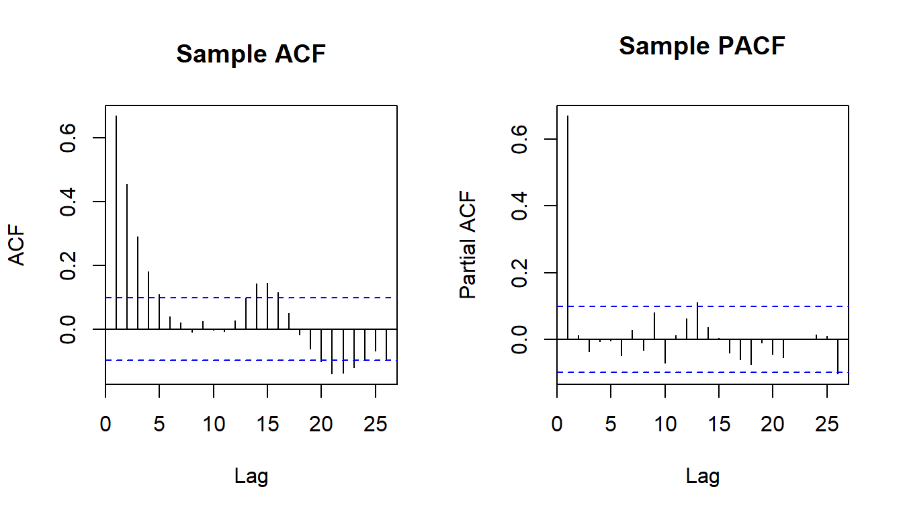
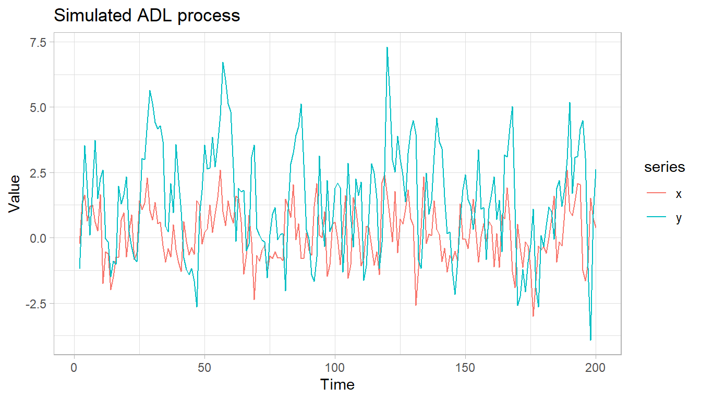
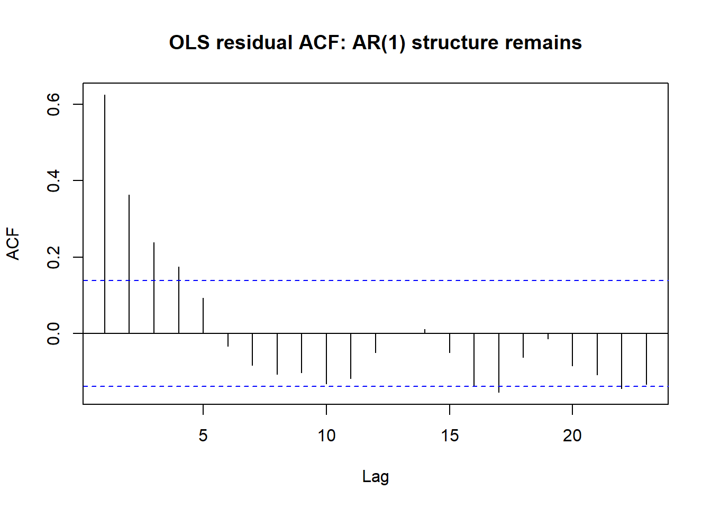
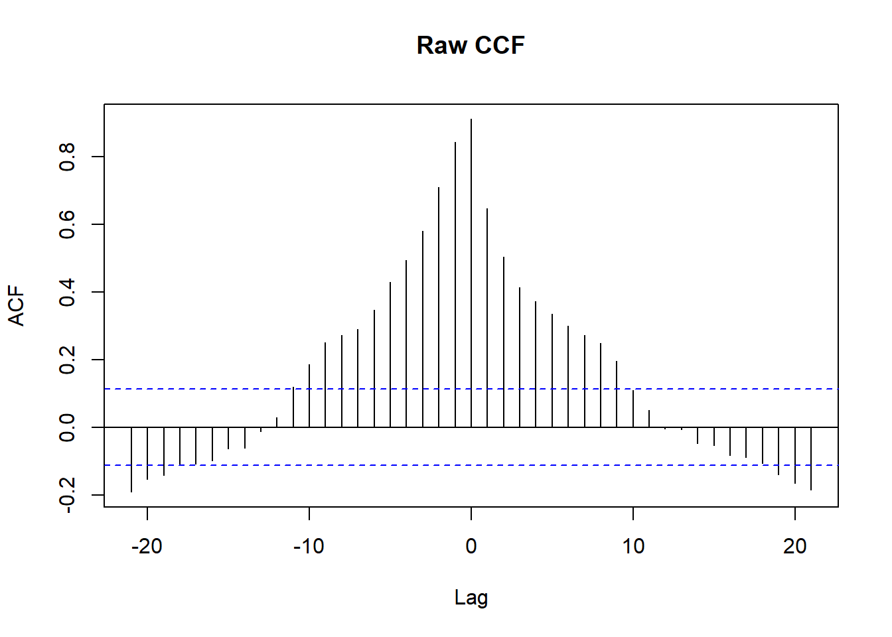
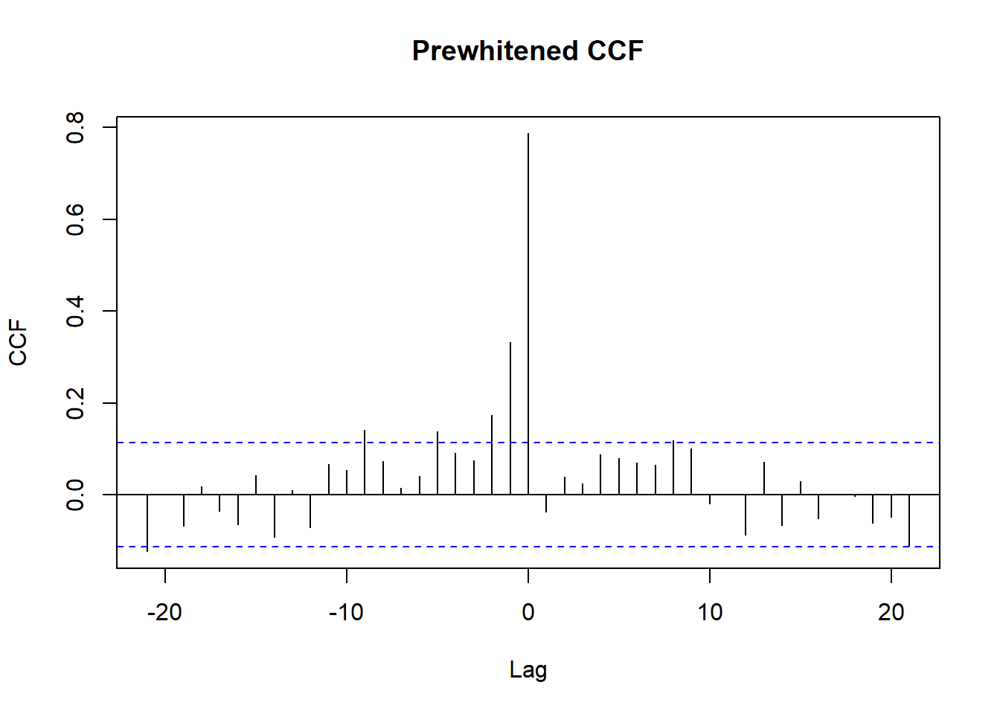

15 Time Series Analysis
A time series is a sequence of observations indexed by time, \(\{y_t\}_{t=1}^{T}\), where the ordering carries information. Unlike cross-sectional data, successive observations are typically dependent, and that dependence is precisely what we exploit for description, inference, and forecasting. This chapter develops the standard toolkit of applied time series econometrics in a logical progression. We begin with the foundational ideas of stationarity and serial dependence, which determine whether the usual asymptotics apply. We then build univariate models for the conditional mean (autoregressive, moving average, and their integrated combinations), turn to models for the conditional variance (the ARCH and GARCH families), and extend the conditional mean to include explanatory variables through distributed lag and autoregressive distributed lag specifications. From there we move to genuinely multivariate dynamics with vector autoregressions, Granger causality, impulse response analysis, and forecast error variance decompositions. We cast many of these models in a unifying state space framework, sketch a broader taxonomy of dynamic models that nests them, and close with diagnostics for serial correlation, robust standard errors, and a brief treatment of age, period, and cohort models.
Throughout, small simulated examples illustrate each idea so the chapter renders in a clean session. Examples that require downloading data over the internet or that rely on specialized packages are shown but not executed.
set.seed(1)15.1 Stationarity and Serial Dependence
15.1.1 Stationarity
Most of the theory underlying time series estimation presumes some form of stability over time. A series \(\{y_t\}\) is strictly stationary if the joint distribution of \((y_{t_1}, \dots, y_{t_k})\) is identical to that of \((y_{t_1+h}, \dots, y_{t_k+h})\) for any collection of time points and any shift \(h\). This is a strong requirement. In practice we usually work with the weaker notion of covariance stationarity (also called weak or second order stationarity), which asks only that the first two moments be stable, namely
\[ E(y_t) = \mu, \qquad \operatorname{Var}(y_t) = \gamma_0 < \infty, \qquad \operatorname{Cov}(y_t, y_{t-h}) = \gamma_h, \]
so that the mean and variance are constant and the autocovariance between two observations depends only on the distance \(h\) between them and not on calendar time \(t\). Covariance stationarity is what makes averaging across time informative about the population, and it underpins the central limit theory used for inference.
Many economic series violate stationarity because they trend. Two cases are commonly distinguished. A trend stationary series is stationary around a deterministic function of time, and can be made stationary by regressing on that trend and keeping the residuals. A difference stationary series contains a unit root, the canonical example being the random walk \(y_t = y_{t-1} + \varepsilon_t\), whose variance grows without bound and which is rendered stationary by differencing rather than detrending. Confusing the two leads to misspecification, since detrending a unit root process or differencing a trend stationary one both distort the dynamics.
15.1.2 The Autocorrelation and Partial Autocorrelation Functions
The autocovariance function \(\gamma_h\) summarizes linear dependence at each horizon. Normalizing by the variance gives the autocorrelation function (ACF),
\[ \rho_h = \frac{\gamma_h}{\gamma_0}, \qquad h = 0, 1, 2, \dots, \]
which is dimensionless and bounded between \(-1\) and \(1\). The partial autocorrelation function (PACF) at lag \(h\) measures the correlation between \(y_t\) and \(y_{t-h}\) after removing the linear effect of the intervening observations \(y_{t-1}, \dots, y_{t-h+1}\). Together the ACF and PACF are the primary descriptive tools for identifying the order of a model in the tradition of Box (1976). As a rough guide, a moving average process of order \(q\) has an ACF that cuts off after lag \(q\), while an autoregressive process of order \(p\) has a PACF that cuts off after lag \(p\).
Figure 15.1 simulates a stationary autoregressive process and plots its sample ACF and PACF.
y <- arima.sim(model = list(ar = 0.7), n = 400)
par(mfrow = c(1, 2))
acf(y, main = "Sample ACF")
pacf(y, main = "Sample PACF")
Figure 15.1: Sample autocorrelation and partial autocorrelation functions of 400 draws from an AR(1) process with coefficient 0.7. The ACF decays geometrically while the PACF cuts off after lag one, and that pair of signatures is what identifies an autoregression of order one.
The ACF decays geometrically while the PACF shows a single dominant spike at lag one, the signature of a first order autoregression.
15.1.3 Testing for a Unit Root
Visual inspection of the ACF is suggestive but not decisive, so formal tests are used. The augmented Dickey-Fuller (ADF) test takes nonstationarity as its null hypothesis. It estimates
\[ \Delta y_t = \alpha + \delta t + \phi\, y_{t-1} + \sum_{i=1}^{p} \zeta_i \Delta y_{t-i} + \varepsilon_t, \]
and tests \(H_0: \phi = 0\) (a unit root) against \(H_1: \phi < 0\) (stationarity); the included lagged differences absorb residual autocorrelation. The Kwiatkowski, Phillips, Schmidt, and Shin (KPSS) test reverses the roles, taking stationarity as the null and a unit root as the alternative. Because the two tests frame the question oppositely, applying both is good practice. When the ADF test rejects and the KPSS test does not, the evidence for stationarity is strong; when the conclusions conflict, the series is near the boundary and results should be interpreted cautiously.
The code below illustrates both tests on a simulated stationary series. It uses the tseries package, which is not preloaded, so it is not executed here.
15.2 Univariate Models for the Conditional Mean
15.2.1 Autoregressive Models
An autoregressive model of order \(p\), written AR(\(p\)), expresses the current value as a linear function of its own past plus a white noise innovation,
\[ y_t = c + \sum_{i=1}^{p} \phi_i\, y_{t-i} + \varepsilon_t, \qquad \varepsilon_t \sim \text{WN}(0, \sigma^2). \]
The process is covariance stationary when the roots of the characteristic polynomial \(1 - \phi_1 z - \cdots - \phi_p z^p = 0\) lie outside the unit circle. For the AR(1) case this reduces to the familiar condition \(|\phi_1| < 1\), under which the unconditional mean is \(c / (1 - \phi_1)\) and shocks decay geometrically. Autoregressions can be estimated consistently by ordinary least squares because the lagged regressors are predetermined, and the resulting estimates are asymptotically normal.
y <- arima.sim(model = list(ar = c(0.5, 0.2)), n = 500)
ar_fit <- arima(y, order = c(2, 0, 0))
ar_fit
#>
#> Call:
#> arima(x = y, order = c(2, 0, 0))
#>
#> Coefficients:
#> ar1 ar2 intercept
#> 0.4451 0.1416 -0.1509
#> s.e. 0.0442 0.0443 0.1160
#>
#> sigma^2 estimated as 1.157: log likelihood = -746.15, aic = 1498.3The estimated coefficients recover the data generating values closely, as expected with a sample of this size.
15.2.2 Moving Average Models
A moving average model of order \(q\), written MA(\(q\)), expresses the series as a weighted sum of the current and past innovations,
\[ y_t = \mu + \varepsilon_t + \sum_{j=1}^{q} \theta_j\, \varepsilon_{t-j}, \qquad \varepsilon_t \sim \text{WN}(0, \sigma^2). \]
A finite order moving average is always stationary because it is a finite linear combination of white noise terms. Its defining feature is a short memory: the autocovariance \(\gamma_h\) is exactly zero for \(h > q\), so the ACF cuts off sharply. For the MA(1) process \(y_t = \mu + \varepsilon_t + \theta_1 \varepsilon_{t-1}\), the mean is \(\mu\), the variance is \((1 + \theta_1^2)\sigma^2\), and the first order autocorrelation is \(\theta_1 / (1 + \theta_1^2)\). Because the innovations are unobserved, moving average models cannot be estimated by ordinary least squares and are fit by maximum likelihood instead.
y <- arima.sim(model = list(ma = c(0.4, 0.3)), n = 500)
ma_fit <- arima(y, order = c(0, 0, 2))
ma_fit
#>
#> Call:
#> arima(x = y, order = c(0, 0, 2))
#>
#> Coefficients:
#> ma1 ma2 intercept
#> 0.4706 0.3109 -0.0035
#> s.e. 0.0413 0.0465 0.0812
#>
#> sigma^2 estimated as 1.041: log likelihood = -719.8, aic = 1445.615.2.3 Autoregressive Moving Average Models
Combining the two components yields the autoregressive moving average model ARMA(\(p,q\)),
\[ y_t = c + \sum_{i=1}^{p} \phi_i\, y_{t-i} + \varepsilon_t + \sum_{j=1}^{q} \theta_j\, \varepsilon_{t-j}. \]
ARMA models offer a parsimonious representation of stationary dynamics: a process that would require many autoregressive or many moving average terms alone can often be captured with a low order ARMA specification. Because the moving average part involves unobserved innovations, estimation is again by maximum likelihood. ARMA models describe univariate stationary series; for several interdependent series the vector autoregression of Section 15.5 is the natural generalization, and for nonstationary series the integrated extension below applies.
y <- arima.sim(model = list(ar = 0.6, ma = -0.3), n = 600)
arma_fit <- arima(y, order = c(1, 0, 1))
arma_fit
#>
#> Call:
#> arima(x = y, order = c(1, 0, 1))
#>
#> Coefficients:
#> ar1 ma1 intercept
#> 0.5952 -0.3262 -0.0649
#> s.e. 0.0832 0.0952 0.0725
#>
#> sigma^2 estimated as 1.141: log likelihood = -890.92, aic = 1787.8315.2.4 Autoregressive Integrated Moving Average Models
When a series contains a unit root, differencing it \(d\) times produces a stationary series that can be modeled as an ARMA process. The result is the autoregressive integrated moving average model ARIMA(\(p,d,q\)), where the integration order \(d\) counts the number of differences required to achieve stationarity. The full model can be written compactly with the lag operator \(L\), defined by \(L y_t = y_{t-1}\), as
\[ \phi(L)\,(1 - L)^d\, y_t = c + \theta(L)\, \varepsilon_t, \]
where \(\phi(L)\) and \(\theta(L)\) are the autoregressive and moving average lag polynomials. The choice of \(d\) should follow from unit root testing rather than from automated criteria alone, since overdifferencing introduces a noninvertible moving average component and inflates variance.
Order selection is often automated. The forecast package implements the stepwise search of Hyndman and Khandakar, which is not preloaded and is shown here without execution.
library(forecast)
y <- arima.sim(model = list(order = c(1, 1, 1), ar = 0.5, ma = 0.3), n = 400)
auto_fit <- auto.arima(y) # selects (p, d, q) by minimizing AICc
summary(auto_fit)We can fit an ARIMA model directly with base R on a series we difference by construction.
15.2.5 Seasonal ARIMA Models
Many economic and business series carry a repeating seasonal pattern (quarterly GDP, monthly retail sales, weekly web traffic) on top of the trend and short-run dynamics ARIMA(\(p,d,q\)) already captures. The seasonal ARIMA model, written ARIMA(\(p,d,q\))(\(P,D,Q\))\(_m\) following Hyndman and Athanasopoulos (2018), adds a second, seasonal set of autoregressive, differencing, and moving average operators at lag \(m\) (the seasonal period, e.g. \(m=4\) for quarterly or \(m=12\) for monthly data) on top of the non-seasonal operators already introduced:
\[ \phi(L)\,\Phi(L^m)\,(1-L)^d(1-L^m)^D\, y_t = c + \theta(L)\,\Theta(L^m)\,\varepsilon_t, \]
where lowercase \(\phi(L)\), \(\theta(L)\) are the ordinary AR and MA polynomials from the previous section and uppercase \(\Phi(L^m)\), \(\Theta(L^m)\) are the seasonal AR and MA polynomials, operating on lags that are multiples of \(m\). The seasonal difference \((1-L^m)^D\) removes seasonal unit roots the same way \((1-L)^d\) removes a non-seasonal one, and the two differencing orders are chosen separately: \(d\) from an ordinary unit root test on the seasonally adjusted series, \(D\) from a seasonal unit root test (or, in practice, from whether a seasonal difference visibly stabilizes the seasonal ACF spikes at lags \(m, 2m, 3m,\dots\)).
library(forecast)
# a monthly series with trend and seasonality
y_seasonal <- ts(
cumsum(rnorm(120)) + 3 * sin(2 * pi * (1:120) / 12),
frequency = 12
)
# inspect seasonal differencing needs
nsdiffs(y_seasonal) # suggested seasonal differencing order D
#> [1] 1
ndiffs(y_seasonal) # suggested non-seasonal differencing order d
#> [1] 1
fit_sarima <- Arima(y_seasonal, order = c(1, 1, 1), seasonal = c(0, 1, 1))
summary(fit_sarima)
#> Series: y_seasonal
#> ARIMA(1,1,1)(0,1,1)[12]
#>
#> Coefficients:
#> ar1 ma1 sma1
#> 0.8445 -0.7997 -0.802
#> s.e. 0.2514 0.2752 0.157
#>
#> sigma^2 = 1.058: log likelihood = -159.38
#> AIC=326.75 AICc=327.14 BIC=337.44
#>
#> Training set error measures:
#> ME RMSE MAE MPE MAPE MASE
#> Training set -0.04132488 0.9575055 0.7393767 -0.7086811 17.78521 0.2115
#> ACF1
#> Training set 0.002682027
# automated search over both seasonal and non-seasonal orders
auto_sarima <- auto.arima(y_seasonal, seasonal = TRUE)
summary(auto_sarima)
#> Series: y_seasonal
#> ARIMA(1,0,0)(2,1,0)[12]
#>
#> Coefficients:
#> ar1 sar1 sar2
#> 0.9733 -0.4813 -0.3247
#> s.e. 0.0185 0.1025 0.1053
#>
#> sigma^2 = 1.192: log likelihood = -164.45
#> AIC=336.91 AICc=337.3 BIC=347.64
#>
#> Training set error measures:
#> ME RMSE MAE MPE MAPE MASE
#> Training set -0.08983873 1.021332 0.767505 0.8457417 18.9277 0.2195461
#> ACF1
#> Training set 0.08650626A useful diagnostic before fitting is to plot the series after non-seasonal differencing, then after both non-seasonal and seasonal differencing, and read the residual ACF/PACF at the seasonal lags \(m, 2m, \dots\) to propose \(P\) and \(Q\), exactly as the ordinary ACF/PACF at lags \(1,2,\dots\) propose \(p\) and \(q\) for the non-seasonal part.
15.3 Models for the Conditional Variance
15.3.1 Autoregressive Conditional Heteroskedasticity
Many financial and macroeconomic series display volatility clustering, where large changes tend to be followed by large changes and calm periods by calm periods. The mean models above assume a constant innovation variance and so cannot capture this. The autoregressive conditional heteroskedasticity (ARCH) model of Engle (1982) lets the conditional variance depend on recent squared innovations. In an ARCH(\(q\)) specification the innovation is \(\varepsilon_t = \sigma_t z_t\) with \(z_t\) an independent standard white noise, and
\[ \sigma_t^2 = \alpha_0 + \sum_{i=1}^{q} \alpha_i\, \varepsilon_{t-i}^2, \]
with \(\alpha_0 > 0\) and \(\alpha_i \ge 0\) to keep the variance positive. A large past shock raises the current conditional variance, producing the clustering observed in returns data.
15.3.2 Generalized ARCH
In practice ARCH models often require many lags to fit persistent volatility. The generalized ARCH (GARCH) model of Bollerslev (1986) adds lagged conditional variances, giving a far more parsimonious description. The GARCH(\(p,q\)) variance equation is
\[ \sigma_t^2 = \alpha_0 + \sum_{i=1}^{q} \alpha_i\, \varepsilon_{t-i}^2 + \sum_{j=1}^{p} \beta_j\, \sigma_{t-j}^2. \]
The GARCH(1,1) special case is the workhorse for asset return volatility. The process is covariance stationary when \(\sum_i \alpha_i + \sum_j \beta_j < 1\), and the sum measures the persistence of volatility shocks. Estimation is by maximum likelihood. The example below uses the fGarch package, which is not preloaded, so it is shown without execution.
15.4 Distributed Lag and Autoregressive Distributed Lag Models
15.4.1 Distributed Lag Models
When an explanatory variable influences the outcome over several periods, its effect is spread, or distributed, across lags. A general distributed lag model is
\[ y_t = \alpha + \sum_{s=0}^{\infty} \beta_s\, x_{t-s} + \varepsilon_t, \]
where the weights \(\beta_s\) trace out the dynamic response. The contemporaneous coefficient \(\beta_0\) is the impact (short run) effect, the partial sum \(\beta_0 + \beta_1\) is the cumulative effect after one period, and the total \(\beta = \sum_{s=0}^{\infty} \beta_s\), assumed finite, is the long run cumulative effect. Writing \(w_s = \beta_s / \beta\) gives normalized weights that sum to one and define the timing of adjustment. The median lag is the smallest \(m\) with \(\sum_{s=0}^{m-1} w_s = 0.5\), and the mean lag is the weighted average \(\sum_{s=0}^{\infty} s\, w_s\). The assumption that the index \(s\) is nonnegative, so that \(y_t\) does not depend on future \(x\), is usually reasonable, although it can fail when agents act today in anticipation of an announced future change.
Because an infinite number of weights cannot be estimated, the lag is truncated at some finite length \(q\),
\[ y_t = \alpha + \sum_{s=0}^{q} \beta_s\, x_{t-s} + \varepsilon_t, \]
and the marginal effect of a one period change in \(x\) that occurred \(s\) periods ago is simply \(\partial y_t / \partial x_{t-s} = \beta_s\). The difficulty is choosing \(q\) and estimating many lag coefficients precisely when \(x\) is highly autocorrelated.
15.4.2 Restricted Distributed Lags
Estimating each \(\beta_s\) freely is the unrestricted approach. It is attractive when the lag weights die out quickly, the regressor is not strongly autocorrelated, and the sample is long relative to the lag length, but otherwise it wastes degrees of freedom and yields imprecise estimates. Restricting the shape of the lag distribution addresses this by imposing smoothness on \(\beta_s\) as a function of \(s\). One option is linearly declining weights, \(\beta_s = \frac{q + 1 - s}{q + 1}\beta_0\). Another is a symmetric tent shape that rises to a peak at lag \(m\) and falls back to zero. The most widely used restriction is the polynomial distributed lag of Almon (1965), which constrains the coefficients to lie on a low order polynomial in the lag index,
\[ \beta_s = \gamma_0 + \gamma_1 s + \gamma_2 s^2 + \cdots, \]
so that a long lag profile is summarized by a handful of polynomial parameters. Higher degree polynomials are more flexible but reintroduce parameters and reduce smoothness, so a low degree is usually preferred.
15.4.3 Lagged Dependent Variables and the Koyck Transformation
A geometric, or Koyck, lag structure assumes the weights decline at a constant rate, \(\beta_s = \theta_0 \phi^s\) with \(|\phi| < 1\). Substituting this infinite distributed lag and applying the Koyck transformation collapses it into a model with a single lagged dependent variable,
\[ y_t = \delta + \phi\, y_{t-1} + \theta_0\, x_t + u_t, \]
which is far easier to estimate. The dynamic marginal effects are \(\partial y_{t+s} / \partial x_t = \theta_0 \phi^s\), and the long run cumulative effect is \(\theta_0 / (1 - \phi)\). The convenience comes at a cost. A single geometric rate \(\phi\) must govern the decay of every explanatory variable, and the lagged dependent variable on the right hand side combined with serially correlated errors violates strict exogeneity, so ordinary least squares is inconsistent and instrumental variables or generalized least squares is required.
15.4.4 Autoregressive Distributed Lag Models
The autoregressive distributed lag model ADL(\(p,q\)), also written ARDL, generalizes the Koyck specification by allowing several lags of both the dependent variable and the regressor,
\[ y_t = \beta_0 + \sum_{i=1}^{p} \phi_i\, y_{t-i} + \sum_{j=0}^{q} \delta_j\, x_{t-j} + u_t, \]
under the predeterminedness condition \(E(u_t \mid y_{t-1}, x_{t-1}, \dots) = 0\). In lag operator form this is \(\phi(L) y_t = \delta + \theta(L) x_t + u_t\), the ratio of two finite lag polynomials, which is why the ADL is sometimes called a rational distributed lag. The distinction from the ARMA model is that here the lag polynomial acts on the observed regressor \(x\) rather than on the unobserved error. The ADL nests static regression, the finite distributed lag, and the Koyck model as special cases, and it is the standard vehicle for estimating both short run dynamics and long run multipliers from a single equation.
Figure 15.2 generates data from an ADL relationship in which lagged \(x\) drives \(y\), then plots both series.
n <- 200
x <- as.numeric(arima.sim(model = list(ar = 0.4), n = n))
y <- numeric(n)
e <- rnorm(n)
for (t in 2:n) {
y[t] <- 0.5 + 0.5 * y[t - 1] + 1.2 * x[t - 1] + e[t]
}
adl_data <- data.frame(time = 1:n, x = x, y = y)[-1, ]
ggplot(tidyr::pivot_longer(adl_data, c(x, y), names_to = "series"),
aes(time, value, color = series)) +
geom_line() +
labs(title = "Simulated ADL process", x = "Time", y = "Value")
Figure 15.2: Simulated autoregressive distributed lag process. The two series move together with the response following the regressor by one period, which is the lag structure the ADL specification is built to recover.
We can fit the ADL by ordinary least squares using constructed lags.
adl_data <- within(adl_data, {
y_lag1 <- c(NA, head(y, -1))
x_lag1 <- c(NA, head(x, -1))
})
summary(lm(y ~ y_lag1 + x_lag1, data = adl_data))
#>
#> Call:
#> lm(formula = y ~ y_lag1 + x_lag1, data = adl_data)
#>
#> Residuals:
#> Min 1Q Median 3Q Max
#> -2.85248 -0.67215 0.08611 0.73857 2.86716
#>
#> Coefficients:
#> Estimate Std. Error t value Pr(>|t|)
#> (Intercept) 0.55517 0.09538 5.821 2.38e-08 ***
#> y_lag1 0.53011 0.03876 13.677 < 2e-16 ***
#> x_lag1 1.05488 0.07396 14.263 < 2e-16 ***
#> ---
#> Signif. codes: 0 '***' 0.001 '**' 0.01 '*' 0.05 '.' 0.1 ' ' 1
#>
#> Residual standard error: 1.099 on 195 degrees of freedom
#> (1 observation deleted due to missingness)
#> Multiple R-squared: 0.7191, Adjusted R-squared: 0.7162
#> F-statistic: 249.6 on 2 and 195 DF, p-value: < 2.2e-1615.4.5 Choosing the Lag Length
Selecting how many lags to include balances bias against variance. Too few lags leave residual autocorrelation that biases inference, while too many lags consume degrees of freedom and risk fitting spurious dynamics. Three complementary strategies are common. The first adds or removes lags sequentially based on the statistical significance of the longest lag. The second compares information criteria such as the Akaike or Schwarz Bayesian criterion across candidate lag lengths and selects the minimizer. The third adds lags until the residuals resemble white noise, verified with the Breusch-Godfrey or Ljung-Box tests discussed in Section 15.8. In practice the criteria are used together, and the Schwarz criterion, being more parsimonious, is often preferred for forecasting.
15.4.6 Regression with ARIMA Errors and Prewhitening
The ADL model above assumes the regression error \(\varepsilon_t\) is white noise once enough lags of \(y\) and \(x\) are included. An alternative, useful when the researcher wants to keep a simple contemporaneous regression \(y_t = \beta_0 + \beta_1 x_t + \eta_t\) rather than an ADL, is to let \(\eta_t\) itself follow an ARIMA process and estimate the two pieces jointly, a transfer function model in the Box-Jenkins tradition. The workflow is: fit the regression by OLS, examine the residual ACF/PACF for leftover structure, and if structure remains, refit the regression and the residual ARIMA model jointly by maximum likelihood rather than by OLS.
Figure 15.3 shows the structure the OLS residuals are left carrying.
library(forecast)
n <- 200
x_reg <- rnorm(n)
eta <- arima.sim(model = list(ar = 0.6), n = n) # AR(1) regression error
y_reg <- 2 + 1.5 * x_reg + eta
ols_fit <- lm(y_reg ~ x_reg)
acf(residuals(ols_fit), main = "OLS residual ACF: AR(1) structure remains")
Figure 15.3: Autocorrelation function of the residuals from a contemporaneous OLS regression whose true error follows an AR(1). The residual autocorrelation is plainly non-zero, which is the diagnostic that calls for modelling the error process jointly rather than reading the OLS standard errors as valid.
# refit jointly: regression coefficients + AR(1) error structure by ML
arima_err_fit <- Arima(y_reg, order = c(1, 0, 0), xreg = x_reg)
summary(arima_err_fit)
#> Series: y_reg
#> Regression with ARIMA(1,0,0) errors
#>
#> Coefficients:
#> ar1 intercept xreg
#> 0.6279 2.2453 1.3683
#> s.e. 0.0547 0.1952 0.0575
#>
#> sigma^2 = 1.088: log likelihood = -290.99
#> AIC=589.99 AICc=590.19 BIC=603.18
#>
#> Training set error measures:
#> ME RMSE MAE MPE MAPE
#> Training set -0.004815587 1.035391 0.8360745 4.954035 80.09413
#> MASE ACF1
#> Training set 0.4332485 0.03280179The Cochrane and Orcutt (1949) two-step procedure predates the maximum-likelihood version above and is worth knowing because it makes the correction mechanics explicit: estimate the AR(1) coefficient \(\hat\rho\) from the OLS residuals, quasi-difference both \(y_t\) and \(x_t\) as \(y_t^{*}=y_t-\hat\rho y_{t-1}\) and \(x_t^{*}=x_t-\hat\rho x_{t-1}\), and re-run OLS on the quasi-differenced series, iterating to convergence (Cochrane and Orcutt 1949). The maximum-likelihood joint fit above is the modern, more efficient version of the same idea and is preferred in practice, but the two-step logic is what the xreg argument to Arima() is doing internally.
A closely related problem arises when the object of interest is not a regression coefficient but the cross-correlation function (CCF) between two series, used to detect a lagged relationship or as an input to Granger-style analysis in the next section. If either series is itself autocorrelated, the raw sample CCF can show spurious peaks driven entirely by each series’ own dynamics rather than by genuine cross-series dependence. Prewhitening removes this artifact: fit a univariate ARIMA model to one series (conventionally the presumed input series \(x\)), apply that same filter to both \(x\) and \(y\), and compute the CCF of the filtered series, which is now a valid guide to the lag and sign of any genuine relationship.
library(TSA)
x_input <- arima.sim(model = list(ar = 0.7), n = 300)
y_output <- stats::filter(x_input, filter = 0.5, method = "recursive") + rnorm(300, sd = 0.5)
# raw CCF: contaminated by each series' own autocorrelation
ccf(as.numeric(x_input), as.numeric(y_output), main = "Raw CCF")
# prewhiten: fit an AR model to x, apply the same filter to x and y, then take the CCF
prewhiten(as.numeric(x_input), as.numeric(y_output), main = "Prewhitened CCF")
The prewhitened CCF isolates lags at which \(x\) genuinely leads \(y\), which is the appropriate diagnostic to run before interpreting a raw cross-correlation as evidence of a lead-lag relationship, and before moving to the multivariate VAR and Granger causality machinery of the next section, which imposes the same white-noise-residual logic on a full system rather than a single pair.
15.5 Vector Autoregressions
15.5.1 The VAR Model
When several time series influence one another, treating any one as exogenous is untenable. The vector autoregression of Sims (1980) models a vector \(\mathbf{y}_t = (y_{1t}, \dots, y_{Kt})'\) of \(K\) series as a linear function of its own lags,
\[ \mathbf{y}_t = \mathbf{c} + \sum_{i=1}^{p} \mathbf{A}_i\, \mathbf{y}_{t-i} + \mathbf{u}_t, \qquad E(\mathbf{u}_t \mathbf{u}_t') = \boldsymbol{\Sigma}, \]
where each \(\mathbf{A}_i\) is a \(K \times K\) coefficient matrix and \(\mathbf{u}_t\) is a vector white noise with contemporaneous covariance \(\boldsymbol{\Sigma}\). Because every equation has the same regressors, the system can be estimated equation by equation by ordinary least squares without loss of efficiency. The lag length \(p\) is chosen by information criteria, balancing fit against the rapid growth in parameters, which number \(K^2 p\) in the coefficient matrices alone. The VAR is the multivariate cousin of the AR model and serves as the foundation for the dynamic analysis that follows. It has been applied widely, for example to study the dynamic interplay of firm performance metrics in marketing settings (Luo and Bhattacharya 2009).
The example below simulates a bivariate VAR(1) and recovers its coefficients. It uses the vars package, which is not preloaded, so it is shown without execution.
library(vars)
# simulate a stable bivariate VAR(1)
A <- matrix(c(0.5, 0.1, 0.2, 0.4), 2, 2)
n <- 500
Y <- matrix(0, n, 2)
for (t in 2:n) Y[t, ] <- A %*% Y[t - 1, ] + rnorm(2)
colnames(Y) <- c("y1", "y2")
VARselect(Y, lag.max = 6)$selection # information criteria for p
var_fit <- VAR(Y, p = 1)
summary(var_fit)15.5.2 Granger Causality
The vector autoregression makes precise a forecasting notion of causality due to Granger (1969). A variable \(x\) is said to Granger cause \(y\) if past values of \(x\) improve the prediction of \(y\) beyond what past values of \(y\) alone achieve. Operationally, in the regression
\[ y_t = \alpha + \sum_{j=1}^{p} \beta_j\, y_{t-j} + \sum_{j=1}^{r} \theta_j\, x_{t-j} + \varepsilon_t, \]
we test the joint null \(H_0: \theta_1 = \cdots = \theta_r = 0\) with an \(F\) test. Rejection means at least one lag of \(x\) carries predictive content for \(y\), in which case we say \(x\) Granger causes \(y\). The unrestricted model includes the lags of \(x\); the restricted model omits them. This is predictive precedence, not structural causation: a rejection establishes that \(x\) helps forecast \(y\), not that intervening on \(x\) would change \(y\). Because the test is conditional on the chosen information set, omitted variables are a serious concern, and a finding can reverse once a relevant third series is added. For this reason the test is best run inside a multivariate VAR rather than on isolated pairs.
The series must be stationary for the standard test to be valid, so unit root processes should be differenced first. The example uses the lmtest package and is shown without execution.
library(lmtest)
grangertest(y ~ x, order = 2, data = adl_data) # does x Granger-cause y?
grangertest(x ~ y, order = 2, data = adl_data) # and the reverse directionChoosing the number of lags trades bias against power in the same way as elsewhere. Too few lags leave residual autocorrelation that biases the test, while too many invite spurious rejections, so candidate lag lengths are compared by information criteria. A practical caution is that the common convenience of using the same lag order for \(x\) and \(y\) has no theoretical basis, and different combinations should be examined.
15.5.2.1 Granger Causality and Mediation
The Granger framework extends naturally to questions of mediation among several series. Within a vector autoregression, the cross equation coefficients encode directional predictive links, so a mediating channel from \(x\) through an intermediate series \(m\) to \(y\) can be expressed as a pattern of Granger causal relations: \(x\) Granger causes \(m\), and \(m\) Granger causes \(y\) conditional on \(x\). Writing the bivariate system
\[ \begin{aligned} x_t &= \sum_{j=1}^{p} \psi_{1j}\, x_{t-j} + \sum_{j=1}^{p} \phi_{1j}\, y_{t-j} + \varepsilon_{1t}, \\ y_t &= \sum_{j=1}^{p} \psi_{2j}\, y_{t-j} + \sum_{j=1}^{p} \phi_{2j}\, x_{t-j} + \varepsilon_{2t}, \end{aligned} \]
the off diagonal lag coefficients identify the direction of temporal influence, with \(y\) Granger causing \(x\) when the \(\phi_{1j}\) are jointly nonzero. This temporal logic lets the analyst trace indirect effects through chains of stationary series, although it inherits the same limitations as ordinary Granger analysis: it speaks to predictive ordering rather than structural causation, requires stationarity, and is sensitive to the conditioning information set. A formal estimator built on this idea, which folds the mediator and outcome equations’ own errors into the VAR and tests a single correlation parameter for unmeasured mediator-outcome confounding, is developed in Mediation with Time Series Data.
15.5.2.2 Nonlinear and Nonparametric Extensions
The standard test detects only linear predictability and can miss dependence that operates through higher moments or nonlinear channels. Nonparametric tests relax the linearity assumption and assess whether the conditional distribution of \(y\) depends on the past of \(x\), which is useful when the relationship is suspected to be nonlinear (Diks and Panchenko 2006). Related approaches build the predictive comparison from flexible machine learning predictors. These extensions are more powerful against nonlinear alternatives but demand larger samples and careful tuning, and they are typically reserved for settings where a linear test fails to detect dependence that theory suggests should be present.
15.5.3 Impulse Response Analysis
A fitted VAR is most informative through its impulse response functions, which trace the dynamic effect of a one time shock to one variable on the entire system over subsequent horizons. Because a stable VAR has a vector moving average representation \(\mathbf{y}_t = \boldsymbol{\mu} + \sum_{i=0}^{\infty} \boldsymbol{\Psi}_i\, \mathbf{u}_{t-i}\), the matrices \(\boldsymbol{\Psi}_i\) are exactly these responses. The difficulty is that the reduced form innovations \(\mathbf{u}_t\) are contemporaneously correlated, so a shock to one cannot be considered in isolation. Identification requires orthogonalizing the innovations, most commonly through a Cholesky decomposition of \(\boldsymbol{\Sigma}\), which imposes a recursive ordering: the first variable responds only to its own shock on impact, the second to the first two, and so on. The ordering encodes economic assumptions and the results can be sensitive to it, so robustness to alternative orderings should be reported. Confidence bands for impulse responses are typically obtained by bootstrap.
15.5.4 Forecast Error Variance Decomposition
A complementary summary is the forecast error variance decomposition, which apportions the variance of the \(h\) step ahead forecast error of each variable among the orthogonalized shocks to all variables in the system. It answers what fraction of the unpredictable movement in one series is attributable to shocks originating in each other series at a given horizon. At short horizons a variable’s own shocks usually dominate, while at longer horizons the contributions of other variables typically grow, revealing the channels through which the system propagates disturbances. Like the impulse responses, the decomposition depends on the identifying ordering of the innovations.
15.6 State Space Models and Unobserved Components
15.6.1 The State Space Form
A unifying representation for linear time series is the state space form, which describes the evolution of an unobserved state vector \(\boldsymbol{\alpha}_t\) together with how that state maps into the observed data. A general linear state space model couples a transition (state) equation with a measurement (observation) equation,
\[ \begin{aligned} \boldsymbol{\alpha}_t &= \mathbf{T}_t\, \boldsymbol{\alpha}_{t-1} + \mathbf{d}_t + \boldsymbol{\nu}_t, \\ \mathbf{y}_t &= \mathbf{Z}_t\, \boldsymbol{\alpha}_t + \mathbf{c}_t + \boldsymbol{\varepsilon}_t, \end{aligned} \]
where \(\boldsymbol{\nu}_t\) and \(\boldsymbol{\varepsilon}_t\) are mutually independent white noise disturbances. The remarkable fact, developed thoroughly by Durbin and Koopman (2012), is that essentially every linear dynamic model in this chapter, including the AR, MA, ARMA, ARIMA, and distributed lag families, can be written in this form. Once a model is in state space form, the Kalman filter delivers the likelihood for estimation and produces optimal one step ahead predictions, filtered estimates of the current state, and smoothed estimates that use the entire sample.
15.6.2 Unobserved Component Models
A particularly interpretable use of the state space form is the unobserved components model popularized by Harvey (1989), which decomposes a series into latent pieces that each have a direct meaning,
\[ y_t = \mu_t + \gamma_t + \psi_t + \sum_{i=1}^{m} \beta_i\, x_{it} + \varepsilon_t, \]
where \(\mu_t\) is a slowly evolving level or trend, \(\gamma_t\) is a seasonal component, \(\psi_t\) is a cyclical component of no fixed period, and the final sum captures the influence of explanatory variables whose coefficients may themselves be fixed or time varying. The trend is often modeled as a random walk, possibly with a stochastic slope to allow a local linear trend, while the seasonal and cyclical components have their own stochastic recursions. Because the components are estimated jointly by the Kalman filter, the model produces a transparent decomposition of the observed series into trend, season, cycle, and regression effects, which is valuable for both understanding and forecasting. Implementations such as the rucm package fit these models; the example is shown without execution because the package is not preloaded.
15.7 A Taxonomy of Dynamic Models
The models above are points on a continuum, and viewing them through a single lens clarifies how they relate. Starting from a static regression \(y_t = \beta x_t + \varepsilon_t\) with no dynamics, we can enrich the specification along several distinct dimensions, and the state space form provides the common language because every linear dynamic model can be cast as a state transition coupled with a measurement equation.
The first enrichment adds dynamics to the mean, as in \(y_t = \lambda y_{t-1} + \beta x_t + \varepsilon_t\), where the autoregressive term \(\lambda\) captures carryover or persistence and \(\beta\) the immediate effect of the regressor. The second adds serial correlation to the errors, replacing white noise with \(\varepsilon_t = \rho \varepsilon_{t-1} + \nu_t\), which is the dynamic regression with autocorrelated disturbances treated in Section 15.8. A third dimension lets the effect itself drift over time, making the coefficient a latent state, for example a random walk \(\beta_t = \beta_{t-1} + \nu_t\), which is exactly a time varying parameter model handled by the Kalman filter; restricting the second difference of \(\beta_t\) to be small instead yields a smoothly evolving effect.
Moving to several series, the vector generalization of the dynamic regression is the VARX model, a vector autoregression augmented with exogenous regressors, in which each of \(N\) equations contains its own lagged dependent variables and a set of \(k\) exogenous variables. Adding dynamics to the error vector as well produces the ARMAX family, the multivariate analogue of including a moving average error. When the dimension of the latent dynamics differs from the dimension of what is observed, the state space form still applies but the system is only partially observed: an example is a latent goodwill or awareness stock that evolves according to its own law of motion and is measured only noisily, or conversely a hierarchy of effects in which a few latent constructs such as cognition, affect, and experience drive many observed indicators.
Two further directions break linearity. Nonlinear dynamic models replace the linear recursions with nonlinear laws of motion; classic examples in the diffusion and advertising literatures specify the rate of change of the state as a nonlinear function of its current level. Regime switching models let the dynamics themselves change discretely, as in a hidden Markov model where the parameters depend on an unobserved state \(s_t\) that evolves as a Markov chain,
\[ y_t = \lambda_{s_t}\, y_{t-1} + \beta_{s_t}\, x_t + \varepsilon_t, \qquad \varepsilon_t \sim N(0, \sigma_{s_t}^2), \]
so that persistence, sensitivity, and volatility differ across regimes such as expansions and recessions. Selecting the number of states is itself a model selection problem addressed by information criteria adapted to the Markov switching setting.
15.7.1 An Applied Example: Advertising Carryover
A concrete instance of dynamics in the mean is the advertising stock, or carryover, model widely used in marketing. The idea is that advertising builds a stock of goodwill that depreciates geometrically, so that current sales respond not only to current advertising but to an accumulated stock \(G_t = \lambda G_{t-1} + x_t\) of past advertising. Substituting this stock into a sales equation produces exactly the Koyck form derived above, linking the marketing notion of carryover to the geometric distributed lag. This connection underlies a large body of work measuring the long run effects of marketing actions and the persistence of brand equity (Aaker and Jacobson 1994; Mizik and Jacobson 2008).
15.8 Diagnostics and Robust Inference
15.8.1 The Consequences of Serial Correlation
Even when the conditional mean is correctly specified, the regression errors of a time series model may be serially correlated. Suppose the random sampling assumption fails so that, conditional on the regressors, \(\operatorname{Cov}(\varepsilon_i, \varepsilon_j) = \gamma_{|i-j|} \neq 0\) for \(i \neq j\). The error variance covariance matrix is then no longer scalar but has the Toeplitz form
\[ \operatorname{Var}(\boldsymbol{\varepsilon} \mid \mathbf{X}) = \sigma^2 \boldsymbol{\Omega} = \gamma_0 \begin{pmatrix} 1 & \rho_1 & \cdots & \rho_{n-1} \\ \rho_1 & 1 & \cdots & \rho_{n-2} \\ \vdots & \vdots & \ddots & \vdots \\ \rho_{n-1} & \rho_{n-2} & \cdots & 1 \end{pmatrix}, \]
with autocorrelations \(\rho_h = \gamma_h / \gamma_0\). In this situation the ordinary least squares estimator remains unbiased and consistent, but it is no longer efficient, and the conventional standard errors are biased, typically downward, so that \(t\) statistics are overstated and inference is misleading.
15.8.2 Tests for Serial Correlation
Two tests are standard. The Breusch-Godfrey Lagrange multiplier test (Breusch 1978; Godfrey 1978) regresses the residuals on the original regressors and several lagged residuals and tests whether the lagged residual coefficients are jointly zero. It allows for autoregressive or moving average errors of a chosen order and remains valid in the presence of lagged dependent variables, which is its key advantage in dynamic models. The Ljung-Box portmanteau test (Ljung and Box 1978) examines the joint significance of the first several residual autocorrelations and is widely used to check whether the residuals of a fitted ARMA model resemble white noise. A small \(p\) value in either test signals remaining serial correlation and a need to enrich the dynamic specification or to adjust the standard errors.
The example below fits a model whose errors are autocorrelated by construction and runs the Ljung-Box test on the residuals, both using base R so the code executes.
n <- 300
x <- rnorm(n)
e <- as.numeric(arima.sim(model = list(ar = 0.6), n = n)) # autocorrelated errors
y <- 1 + 0.5 * x + e
fit <- lm(y ~ x)
Box.test(residuals(fit), lag = 10, type = "Ljung-Box")
#>
#> Box-Ljung test
#>
#> data: residuals(fit)
#> X-squared = 131.09, df = 10, p-value < 2.2e-16The small \(p\) value correctly flags serial correlation in the residuals.
15.8.3 Remedies: Robust Standard Errors and GLS
There are two broad responses to serially correlated errors. The first keeps the ordinary least squares point estimates, which are still consistent, and corrects only the standard errors. The heteroskedasticity and autocorrelation consistent estimator of Newey and West (1986), commonly called Newey-West, does exactly this by forming a weighted sum of autocovariances of the score that downweights longer lags, yielding valid inference without specifying the exact form of the dependence. This is the default choice when the error process is unknown and the sample is reasonably long. The second response models the dependence explicitly and applies generalized least squares, transforming the data by \(\boldsymbol{\Omega}^{-1/2}\) to restore efficiency; when \(\boldsymbol{\Omega}\) depends on unknown parameters they are estimated and feasible generalized least squares is used, as in the Cochrane-Orcutt or Hildreth-Lu procedures for first order autoregressive errors. Generalized least squares is more efficient when the error model is correct but is sensitive to misspecification, whereas Newey-West is robust but less efficient.
The code below computes Newey-West standard errors for the regression above using the sandwich and lmtest packages, which are not preloaded, so it is shown without execution.
15.9 Age, Period, and Cohort Models
A final dynamic structure arises when observations are indexed not by a single time dimension but by three: the age of a unit, the calendar period of observation, and the cohort to which the unit belongs. Outcomes in demography, epidemiology, and the social sciences often reflect all three influences simultaneously, namely effects that vary with how old a unit is, effects common to everyone at a given date, and effects shared by units born or formed at the same time. The defining obstacle is the exact linear dependence among them, since cohort equals period minus age, which makes the three sets of effects unidentified without further assumptions. A model that includes unrestricted age, period, and cohort terms cannot separate their linear components, so any decomposition rests on a constraint that the analyst must defend rather than read from the data.
Modern treatments confront this identification problem directly. Fosse and Winship (2019) analyze which features of age, period, and cohort effects are estimable without arbitrary constraints and characterize the set of solutions consistent with the data, providing a principled way to report what the data can and cannot reveal. Applications continue to extend these ideas to new domains, including studies of customer and product dynamics over time (Oblander and McCarthy 2023) and behavioral settings (Blanchard and Palazzolo 2024). The practical lesson is that any age, period, and cohort decomposition should make its identifying assumption explicit and assess how sensitive the conclusions are to that choice.